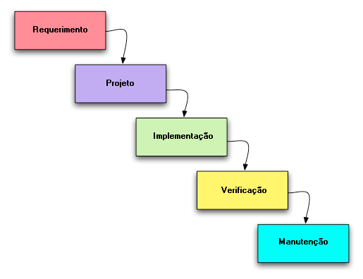

Método de desenvolvimento em Cascata
- Esse modelo é o mais antigo e o mais amplamente usado da engenharia de software;
- Modelado em função do ciclo da engenharia convencional requer uma abordagem sistemática, seqüencial ao desenvolvimento de software;
- O resultado de uma fase se constitui na entrada da outra;
- É constituído de 5 fases, são elas:

Requerimentos:
- Nesta fase, são estabelecidos os requisitos do produto que o idealizador almeja desenvolver, o que normalmente se baseia nos serviços que precisam ser fornecidos, nas limitações aceitáveis e os objetivos do software.
- Depois que isso é determinado, os requisitos precisam ser estabelecidos de uma forma adequada para que também sejam úteis para a próxima etapa.
- Esta fase compreende a documentação e o estudo da viabilidade e a facilidade do projeto com a finalidade de estipular o processo de início de desenvolvimento do projeto do sistema, podendo ser entendida como o começo do ciclo de vida do produto.
Projeto:
- O projeto de elaboração do sistema é composto por vários processos que se centralizam em quatro atributos diferentes do sistema, sendo: a estrutura de dados, a arquitetura do software, caracterização das interfaces e detalhes procedimentais.
- O processo de projeto mostra os requisitos de uma maneira que possibilita a codificação do produto (sendo uma prévia fase de codificação). Da mesma forma que a análise dos requisitos, o projeto passa a ser documentado e torna-se parte do software.
Verificação:
- A etapa de implementação é quando os programas são criados. Caso o projeto tenha um nível de detalhamento mais avançado, a etapa de codificação pode ser implementada de maneira automática.
- A princípio, é recomendado adicionar um teste unitário de cada módulo que é desenvolvido nesta fase. Nesta situação, as unidades de código criadas são submetidas a testes individuais antes de progredir para a etapa de integração e teste global.
Implementação:
- Após o fim da etapa de codificação, inicia-se a fase da realização de teste do sistema. Este processo de teste é focado em dois pontos principais, que são as lógicas internas do software e as suas funcionalidades externas.
- Esta etapa é importante porque evidencia se os erros de comportamento do software foram solucionados e assegura que as entradas definidas produzem resultados eficientes e que estão de acordo com os requisitos determinados anteriormente.
Manutenção:
- A fase da manutenção se baseia na correção de erros que não detectados durante os testes, em melhorias funcionais e de preferência com os demais tipos de suporte. Esta etapa faz parte do ciclo de vida do produto de software e não pertence apenas ao seu desenvolvimento. As melhorias e alterações para correções do software podem ser classificadas como parte do processo de desenvolvimento.
- As etapas de manutenção descritas até agora são as mais importantes e utilizadas, mas também existe as sub-etapas que devem ser executadas dentro de cada etapa, que podem se diferenciar do desenvolvimento de um projeto para o outro.